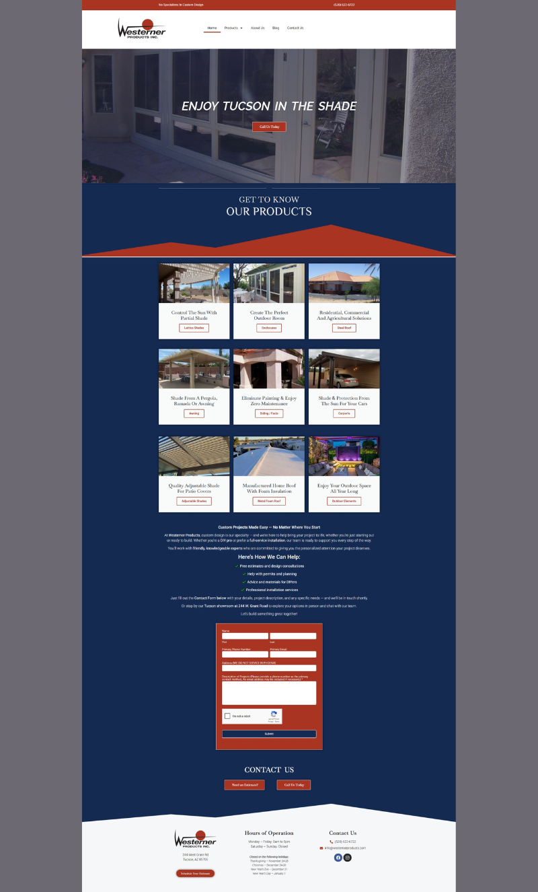

My Featured Projects

Furniture Store
Modern e-commerce website with product showcase and smooth UX.

Dentistry Site
Professional and approachable design for a dental practice.

Roofing Site
Clean business design highlighting services and customer trust.

Insurance Site
Clear, informative layout for clients comparing coverage options.

NIFLA Site
Nonprofit advocacy website built for clarity and engagement.

WaterWalkers Site
Community outreach and faith-based design focused on impact.

Gastrologist Site
Clean and professional medical layout with strong UX.

Flutter Site
Modern creative site emphasizing design and user flow.